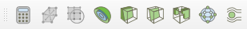
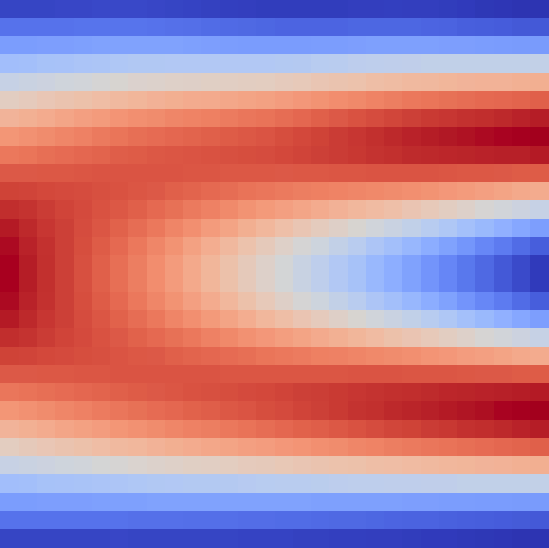
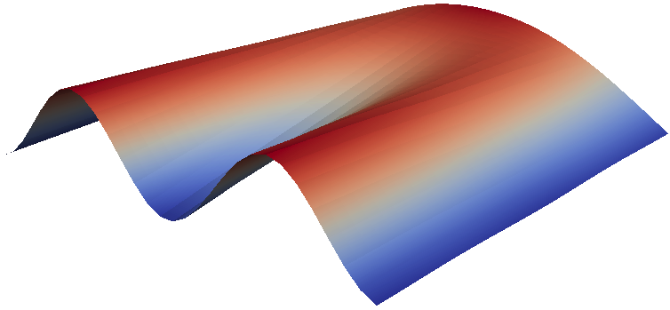
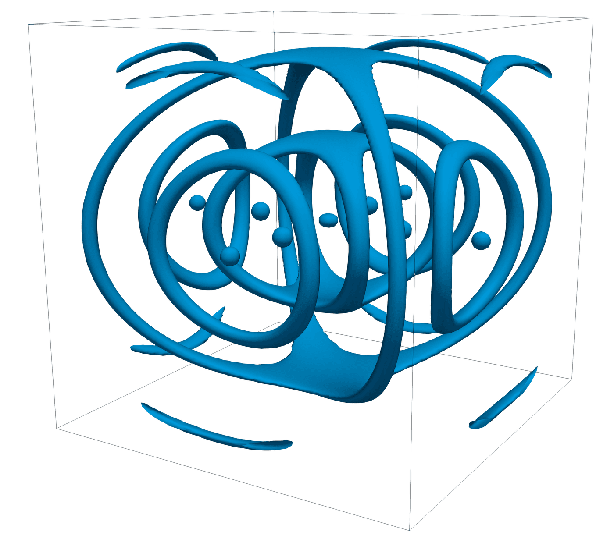
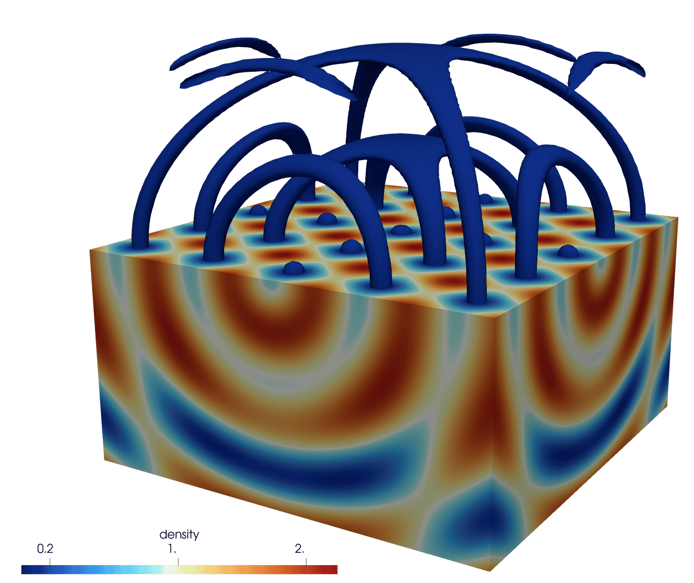
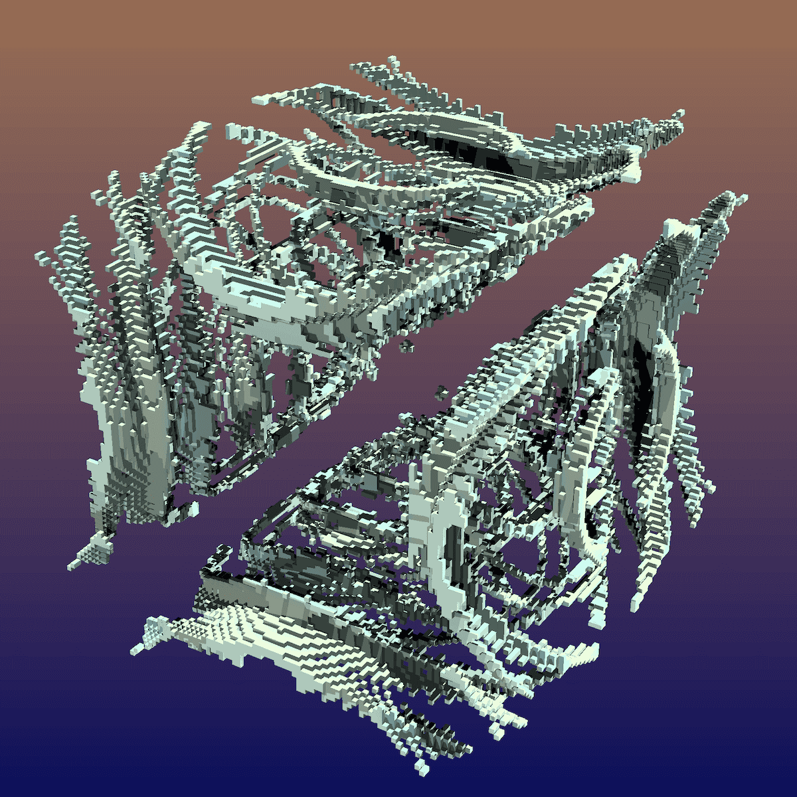
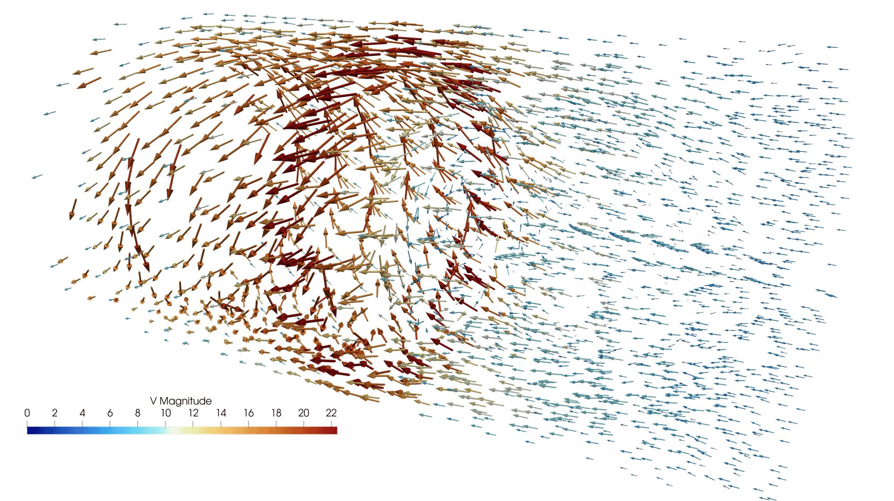
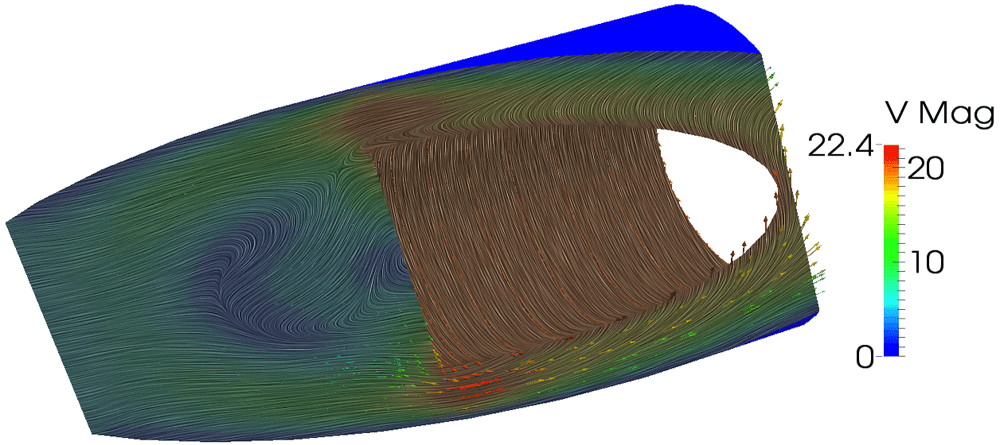

Enrichir la visualisation avec des filtres#
Introduction aux filtres#
Plusieurs caractéristiques intéressantes d’un ensemble de données ne peuvent être observées en surface : une grande quantité d’informations utiles se trouve plutôt à l’intérieur, ou peut être extraite d’une combinaison de variables.
Parfois, une vue souhaitée n’est pas disponible pour un certain type de données, par exemple :
Un ensemble de données 2D \(f(x,y)\) sera affiché comme une surface 2D, même en 3D (essayez de charger
~/prv101-main/lab/2d000.vtk), mais nous pourrions vouloir visualiser l’élévation \(z=f(x,y)\).Une vue volumétrique – non disponible pour toutes les discrétisations VTK, mais disponible, entre autres, pour les points structurés (Image Data) et même les grilles non structurées si la connectivité est fournie.


Les filtres sont des unités fonctionnelles qui traitent les données pour générer, extraire ou dériver des caractéristiques supplémentaires. Les connexions entre les filtres forment un pipeline de visualisation.
ParaView fournit déjà plus de 140 filtres et on peut en ajouter via des scripts Python ou via des plugiciels programmés en C++.
Tous les filtres se trouvent dans le menu Filters.
Certains filtres se trouvent aussi dans la barre d’outils.

Un filtre Calculator évalue une expression mathématique pour chaque point ou chaque cellule.
Un filtre Contour extrait des points, des isocontours ou des isosurfaces à partir d’un champ scalaire.
Un filtre Clip (rognage) enlève toute la partie de la visualisation d’un côté d’un plan dans l’espace 3D.
Un filtre Slice (tranche) intersecte la visualisation avec un plan ; l’effet est similaire au Clip, excepté qu’il ne reste que la géométrie à l’intersection du plan et de la visualisation.
Un filtre Threshold (seuil(s)) extrait les cellules se trouvant dans un certain intervalle du champ scalaire.
Un filtre Glyph place des glyphes à chaque point d’un maillage ; les glyphes peuvent être orientés selon un champ vectoriel et agrandis selon un champ vectoriel ou scalaire.
Un filtre Stream Tracer initialise un champ vectoriel avec des points, puis suit ces points initiaux à travers le champ vectoriel en régime permanent.
L’édition des propriétés d’un filtre se fait dans le panneau Properties.
Exemple – Visualiser des données 2D en 3D#
Chargez le fichier
~/prv101-main/lab/2d000.vtkqui contient un échantillonnage de la fonction 2D \(f(x,y)=(1-y)\sin(\pi x)+y\sin^2(2\pi x)\) pour \(x,y\in[0,1]\) sur une grille \(30 \times 30\).Sélectionnez les données dans le Pipeline Browser, ajoutez le filtre Miscellaneous \(\rightarrow\) Warp By Scalar et activez la vue 3D dans la fenêtre de rendu.
Dans les propriétés du filtre, ajustez le Scale Factor à
0.3pour reproduire la vue 3D ci-dessous :


Exemple – Optimisation 3D#
Pour tester des algorithmes d’optimisation, il existe plusieurs fonctions de test, dont la fonction 3D de Styblinski-Tang :
Une variante discrétisée de cette fonction (avec \(x_i\in[-4,4]\)) se
trouve dans le fichier ~/prv101-main/lab/stvol.nc.
Quelle est la taille de la grille? Est-ce que cela correspond à la taille du fichier?
Trouvons l’emplacement approximatif du minimum global de \(f(x_1,x_2,x_3)\) à l’aide de techniques visuelles (tranches, isosurfaces, seuils, rendu volumique, etc.)
Note
On peut trouver les coordonnées exactes du minimum global en utilisant
Filters \(\rightarrow\) Data Array \(\rightarrow\) Statistics
\(\rightarrow\) Descriptive Statistics et en triant les valeurs de
\(f(x,y,z)\) de stvol.nc.
Quelques exercices avec les filtres#
Recréez cette visualisation avec un filtre Contour#
Données à la source :
~/prv101-main/lab/sineEnvelope.ncIndices :
Filtre de type Contour.
Isosurface à
0.16.Échelle de couleurs de
0.15à0.20.
(3 minutes + solution)

Bonifiez la visualisation avec un filtre Clip#
Données à la source :
~/prv101-main/lab/sineEnvelope.ncIndices :
Pipeline de visualisation à deux filtres.
Filtre de type Clip.
L’échelle de couleurs selon la variable density, partagée par les deux calculateurs, s’ajuste automatiquement.
Option Show Plane.
(3 minutes + solution)

Recréez cette visualisation avec un filtre Threshold#
Données à la source :
~/prv101-main/lab/sineEnvelope.ncIndices :
Filtre de type Threshold.
Afficher les points dont la valeur \(\rho\in[0.8, 1.0]\).
Gradient de couleurs pour l’arrière-plan.
Ray tracing et Shadows.
View \(\rightarrow\) Light Inspector.
(3 minutes + solution)

Recréez cette visualisation avec caméras liées#
Données à la source :
~/prv101-main/lab/disk_out_ref.ex2PresetTempseulement.
Indices :
Compléter une visualisation à la fois.
Coloration selon
Presà gauche.Coloration selon
Tempà droite.Lier les caméras.
(3 minutes + solution)
{kind=link}
Lignes de flux et glyphes#
Voici un exemple de visualisation des flux à l’intérieur d’un volume :
Chargez
Tempet la vélocitéVdu fichier~/prv101-main/lab/disk_out_ref.ex2.Ajoutez un filtre Stream Tracer, configurez le Seed Type =
Point Cloudet le Radius =3pour la sphère. Ensuite :Essayez différents Number Of Points et différents Maximum Streamline Length.
(Optionnel) Transformez les lignes de flux en tubes en ajoutant : Filters \(\rightarrow\) Miscellaneous \(\rightarrow\) Tube (avec Radius =
0.03).
{kind=link}
Ajoutez des glyphes aux lignes de flux pour indiquer l’orientation et l’amplitude :
Sélectionnez le StreamTracer dans le Pipeline Browser.
Ajoutez-lui un filtre Glyph de Type =
Arrow, avec :Orientation Array =
V,Scale Array =
No scale array,Scale Factor =
0.5.
Coloriez les glyphes selon
Temp.
Exercice pour la maison – Remplir le volume entier de vecteurs#
Chargez V de ~/prv101-main/lab/disk_out_ref.ex2 et affichez le champ de
vélocité avec des flèches orientées selon V, mais dimensionnées et colorées
selon la norme de V.
{kind=link}

Convolution intégrale de ligne#
Voici un exemple de « line integral convolution » dans ParaView :
{kind=link}

Pour reproduire cette visualisation :
Chargez
Vde~/prv101-main/lab/disk_out_ref.ex2.Ajoutez un filtre de type Clip et configurez sa normale à
(1, 0, 0.4).Sélectionnez la représentation Surface LIC et changez l’échelle de couleurs (Rainbow Uniform).
Dans les propriétés du Clip, sous SurfaceLIC: Integrator, vérifiez que
Vest sélectionné.Jouez ensuite avec les valeurs de Number Of Steps et de Step Size.
Représentation Stream Lines – tracé en temps réel#
Les détails de cet exemple sont expliqués à cette page. Voici les étapes pour reproduire la vue ci-dessous :
Dans Tools \(\rightarrow\) Manage Plugins, activez le StreamLinesRepresentation.
Du fichier
~/prv101-main/lab/disk_out_ref.ex2, chargezPres,TempetV.Affichez
Presen Surface, avec opacité =0.25.
Ajoutez un filtre Calculator avec la formule
Vet utilisez la représentation Stream Lines (affichez aussi la source).Dans les propriétés du Calculator, coloriez selon Temp et doublez le Step Length.
{kind=link}
Filtres pour données 3D sous forme de colonnes#
Supposons que nous avons des données sous la forme d’un fichier CSV ayant les
colonnes x,y,z,scalar.
Pour des coordonnées aléatoires :
Exemple avec 100 points :
~/prv101-main/lab/tabulatedPoints.txtOn peut utiliser un filtre Table To Points et configurer les champs X/Y/Z Column.
Ensuite, on peut ajouter un filtre Glyph pour voir des sphères à la place des points et on peut les colorier selon
scalar.En l’absence de topologie, on peut passer les points via un filtre Delaunay 3D, suivi d’un filtre Extract Edges et ensuite d’un filtre Tube.
Pour une grille structurée :
Exemple avec 10×10×10 points :
~/prv101-main/lab/tabulatedGrid.txtOn peut utiliser un filtre Table To Structured Grid et configurer les champs Whole Extent de
0à9pour chaque dimension et les champs X/Y/Z Column.Les données doivent présenter une topologie implicite pour que ce filtre fonctionne.
Rappel : ce format de fichier est déconseillé pour les grands ensembles de données, car cela cause du gaspillage d’espace disque et de bande passante.
Le fichier
tabulatedPoints.txta une taille de 6231 octets vs 1600 octets en données binaires à simple précision.Le fichier
tabulatedGrid.txta une taille de 20 013 octets vs 4000 octets pour le champsscalaren données binaires à simple précision.
Conclusion#
Les différents filtres de ParaView permettent d’extraire et de visualiser une meilleure qualité d’information à partir de données brutes, ce qui est indispensable pour la communication scientifique. Cependant, leur utilisation peut avoir certains impacts collatéraux :
De nombreux filtres de visualisation transforment les données structurées (en grille) en données non structurées. Par exemple : Clip, Slice, etc.
L’empreinte mémoire et la charge du processeur peuvent augmenter très rapidement. Par exemple, couper \(400^3\) valeurs à 150 millions de cellules peut prendre environ une heure sur un seul cœur CPU. Il devient alors préférable de travailler en mode distribué.